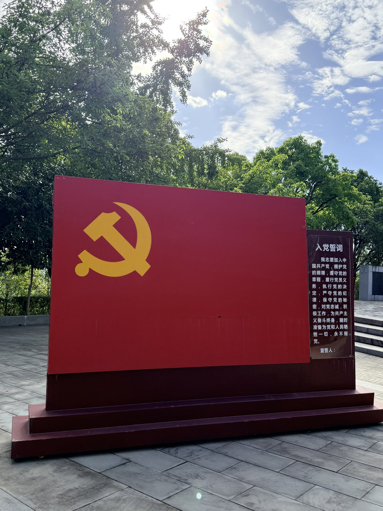
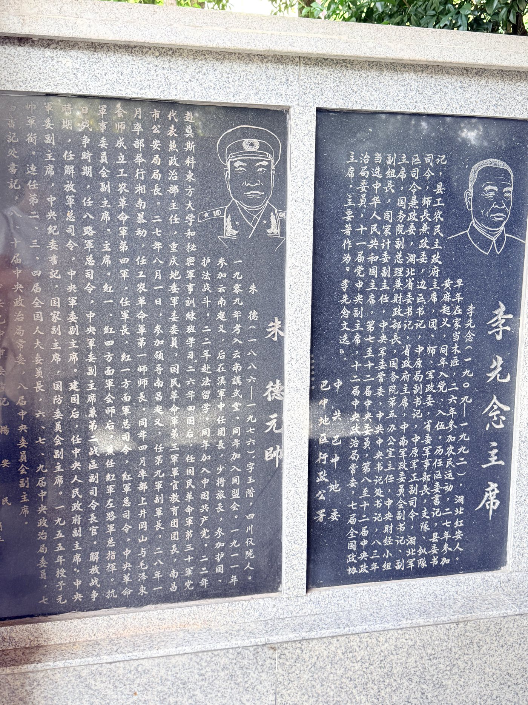

碑林春秋 · CHRONICLE
三十年，为十四万人安家
一座碑林不是一天长成的。它起于一个睡不着的夜晚，成于八十万公里的奔走。
一座碑林不是一天长成的。它起于一个睡不着的夜晚，成于八十万公里的奔走。
一九三二年十二月，红四方面军主力自鄂豫皖根据地西征，转战三千余里，翻越天险大巴山进入川北。通江、南江、巴中相继解放，川陕革命根据地由此建立，鼎盛时辖二十三个县和一个市，人口约六百万，是当时全国第二大苏区。
巴中十二万儿女参加红军，四万八千人牺牲在这片山上。一九九二年，为筹备红军入川六十周年纪念活动，时年五十四岁的张崇鱼翻检大量史料，被这组数字击中。他想：书会腐烂，字会模糊，唯有石头能留得久一些。
一九九三年九月，四川省人民政府批准在巴中建立“川陕苏区将帅碑林”。

园区内的党旗雕塑 · 南龛山
从根据地创建，到碑林落成，再到英名逐年增补。
红四方面军主力自鄂豫皖西征，转战三千余里，解放通江、南江、巴中，开辟川陕革命根据地。
根据地辖二十三个县和一个市，人口约六百万，红军发展到八万余人，地方武装十万余人。
红四方面军撤离川陕苏区。巴中十二万参军儿女中，四万八千人牺牲，许多人没有留下完整姓名。
张崇鱼提出为红军将士树碑立传，质疑与嘲讽随之而来。他拿出仅有的八百元存款，向全国寄出三千多封信。
四川省人民政府批准建立“川陕苏区将帅碑林”。建设之初“四没有”：没有专人、没有专款、没有办公室、没有电话。
张崇鱼一行走访三十一个省份、一千多家单位、六千多位红军将士及亲属，行程八十余万公里，搜集史料两亿字以上。
占地一百二十余亩的川陕苏区将帅碑林在南龛山顶正式落成，红四方面军主要将领纪念像园、纪念单碑长廊、英名纪念碑次第铺开。
中共中央宣传部公布川陕苏区将帅碑林为全国爱国主义教育示范基地。
园区建成十七处露天展区，嵌碑四千五百八十余块，个人纪念单碑三千二百三十七块，珍藏革命物品一万五千余件，年均接待观众逾百万人次。
张崇鱼，一九三八年生于巴中。退休前是巴中县人大常委会委员、教科委主任；退休后，成了这座碑林的守碑人。

博物馆展厅 · 将士生平与史料
为了省钱，他坐火车硬座，住几块钱一天的地下室，饿了就买烤红薯。他被当成过骗子，被小偷划破过胸口，遭遇过车祸，在路上病危。老伴哭着劝他：“命都快没了，还找个啥。”
近三十年间，他搜集到十六万八千余名红军战士英名、两亿字以上史料、两万多张照片、一万两千多件纪念物品，其中三级以上文物三百余件。二〇二〇年，他将五千一百四十七件藏品无偿捐给纪念馆。
“民族复兴国人盼，新的长征路在前。巴山蜀水风云涌，开创伟业莫怕难。耄耋之年要奋斗，红军精神世代传！”这是他写给自己的诗。
英名纪念碑与环形碑墙 · 俯瞰
园区最核心的建筑是红军将士英名纪念碑，碑体总高十六米。碑顶至碑文龛上口为一点九三二米——这个精确到毫米的数字，对应一九三二年红军进入川北通江、南江、巴中。
碑体四周的碑林墙呈圆环形合抱，寓意革命取得圆满成功；十四万零八百二十个英名以籍贯为序密密排列，绕碑一周，像一次永不解散的集合。
看看园区里的十七处展区 →